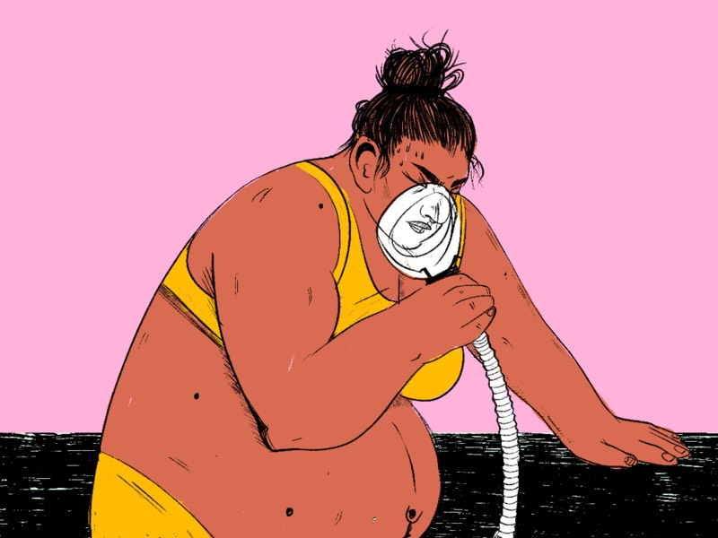
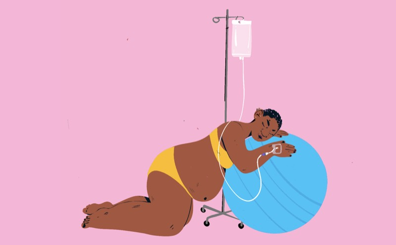
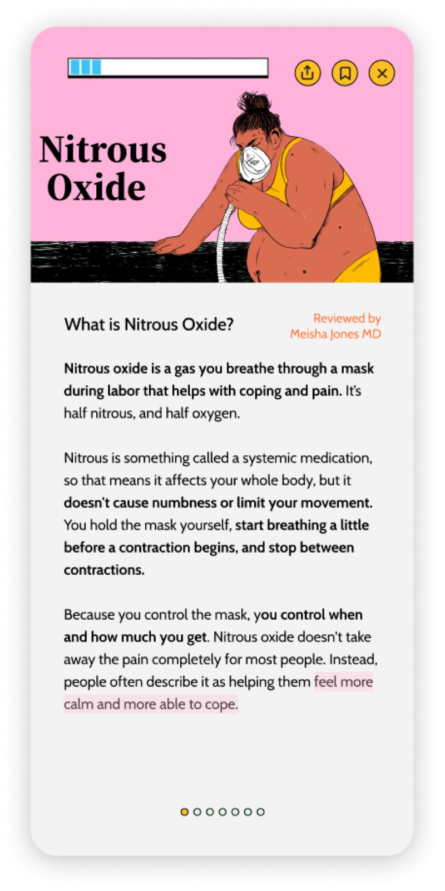
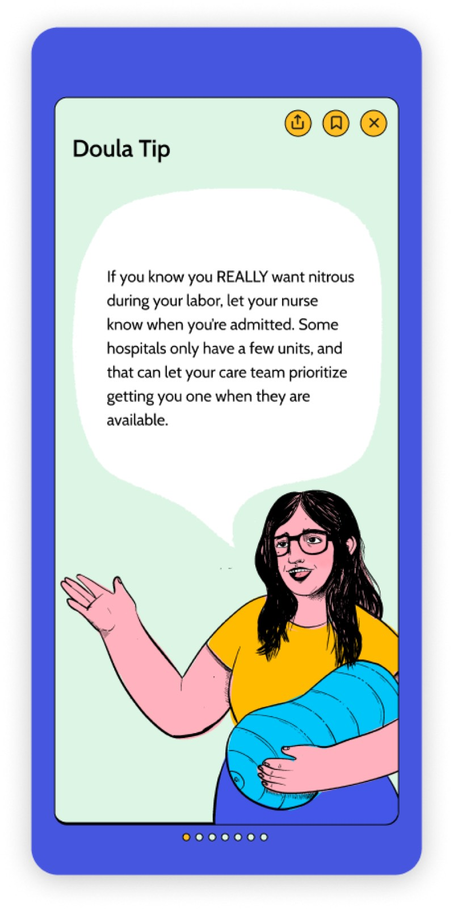

An evidence-based birth planning app
Doulie started with a gap between how people prepared for birth and how decisions actually got made in a clinical setting. Traditional birth plans can be long, rigid, and hard to use in the moment.
It was an exploratory project, not a shipped product. We wanted to see how interaction design could support informed decisions, patient autonomy, and communication during pregnancy and birth.
Doulie is a mobile birth-preparation and planning experience. It brings together short educational content, guided decision-making, questions to ask your provider, and a concise birth preferences tool, in a warm visual style with hand-drawn illustrations throughout. I was the lead engineer and built the app.



